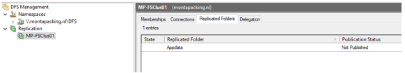
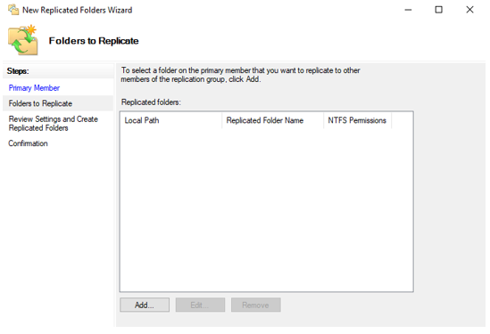

DFS replicatie afbreken en opnieuw opbouwen
Inleiding
Als de backlog van een DFS replicatie te groot wordt kan deze dat zonder
onze hulp niet meer herstellen. Het beste is dan om de replicatie af te
breken en opnieuw op te bouwen.
Het verwijderen en opnieuw opbouwen van deze replicatie heeft geen
gevolgen voor de DFS-Namespace.
Hieronder vind je een beschrijving van het opnieuw opbouwen van de replicatie van het MP-FSClust01 cluster op de fileservers MP-FS100 en MP-FS200.
Powershell commando's
Commando die de 100 files weergeeft die op dit moment verwerkt worden:
Get-DfsrState -ComputerName "mp-fs200" | Format-Table FileName,UpdateState,Inbound,Source* -Auto -Wrap
Commando wat de backlog aangeeft :
dfsrdiag backlog /rgname:"MP-FSCLus01" /rfname:"appdata" /sendingmember:"MP-FS100" /receivingmember:"MP-FS200"
DFS replicatie stoppen
Start een RDP-sessie naar de MP-FS100 en log in met je admin-account.
Start nu de DFS Management tool
Selecteer in het linker scherm Replication -> MP-FSCluster01
Ga nu naar het 3^de^ tabje "Replicated Folders"
Hier vind je de informatie van de replicated folder "Appdata"Selecteer "Appdata" en klik rechter-muistoets.
Kies nu voor "Delete".

Je krijgt nu een bevestingingsscherm
Kies hier voor "Yes" en de replicatie wordt verwijderd.
- Herstart nu op beide servers de Windows service "DFS Replication"
Schonen van data
Om de opbouw van de replicatie soepel te laten verlopen gaan we op de MP-FS200 wat mappen leegmaken.
Map Eorderattachements leegmaken op de MP-FS200 (steekproef nemen in MP-FS100 mag geen bestand meer staan van ouder dan 4 dagen) RD /S E:\Appdata\Eorderattachements
Map RelatieSystemConnections leegmaken op de MP-FS200 (steekproef nemen in MP-FS100 mag geen bestand meer staan van ouder dan 2 dagen)
RD /S E:\Appdata\RelatieSystemConnections
DFS replicatie opnieuw opbouwen
Start een RDP-sessie naar de MP-FS100 en log in met je admin-account.
Start nu de DFS Management tool
Selecteer in het linker scherm Replication -> MP-FSCluster01
Klik nu rechter-muistoets op "MP-FSCluster01" en selecteer "New Replicated Folers"
Selecteer nu de Primary Member (In dit geval de MP-FS100) en klik op "Next".
Klik nu op 'Add" om het path wat gerepliceerd moet worden toe te voegen.
Kies in het volgende scherm het path. Het ziet er dan als volgt uit.
Klik "OK" en dan "Next"
Kies nu "Edit" om het path waar de data op de secundaire server gerepliceerd moet worden.
Vul het gewenste path in bij "Membership status" en klik "OK" en dan "Next"
Nu verschijnt het volgende scherm.
Klik "Create" om de configuratie in werking te stellen.
- Klik "Close
Staging aanpassen
Na het activeren van de replicatie dienen we nog wat settings aan te passen.
Selecteer in het linker scherm Replication -> MP-FSCluster01
Ga nu in het rechter scherm naar het eerste tabje "Memberships" selecteer met de rechter muistoets de regel van één van de twee members. In dit voorbeeld beginnen we met de MP-FS100.
Kies in het pull-down menu voor "Properties". En ga dan naar het 3^de^ tabje "Staging"
Wijzig hier het "Staging path"naar de gewenste map. Ook wijzigen wij hier de grote van de staging map in 204800 Megabytes (200GB). Klik hierna op "OK".
- Doe dit nu ook voor de 2^de^ regel (de MP-FS200).